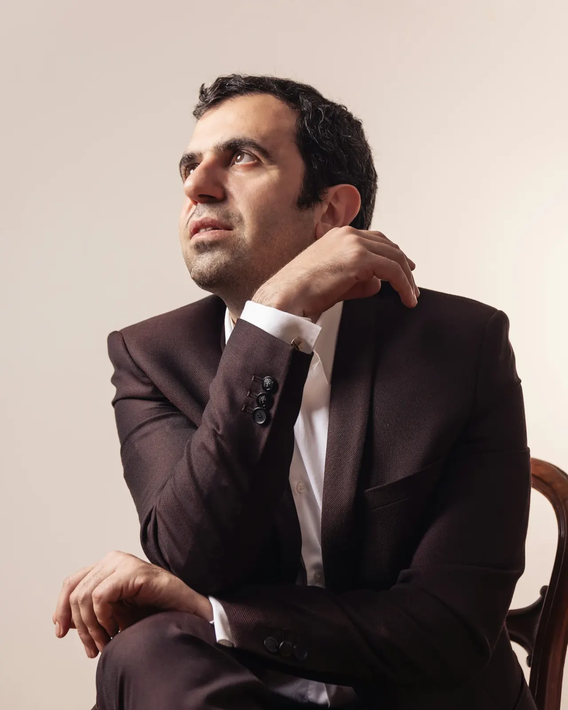
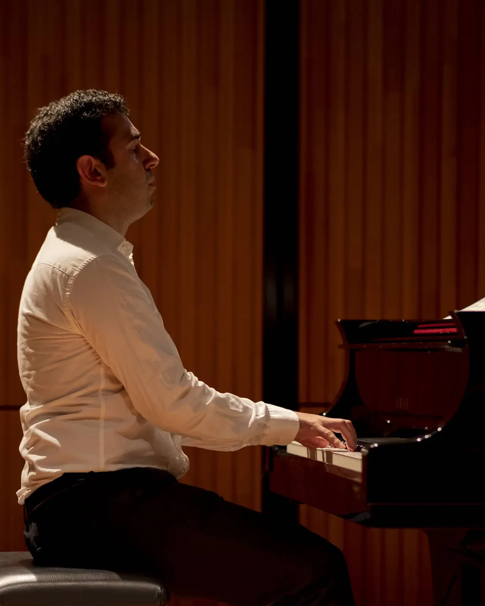
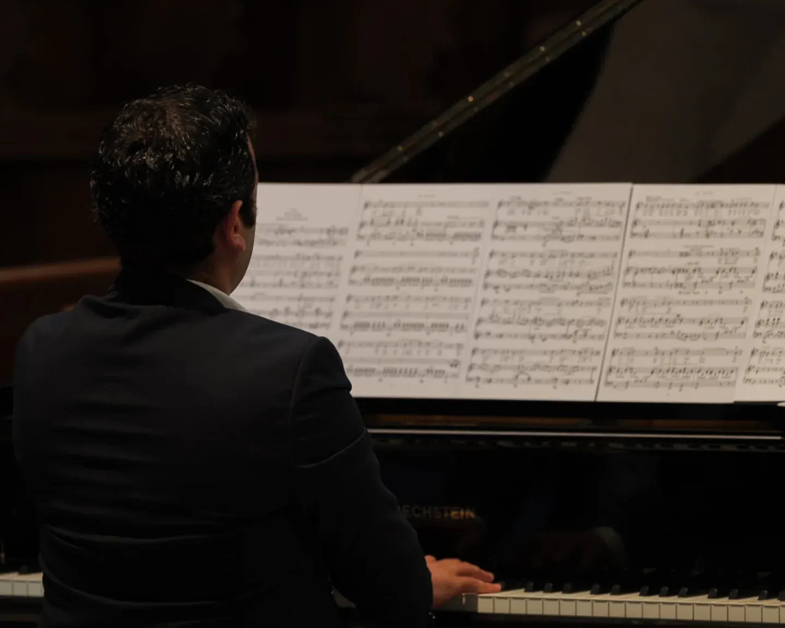

ArmanGrigorian
1. Épuré
Dans l'esprit du site de Jean-Christophe Dijoux : beaucoup de blanc, le nom composé comme la page de titre d'une partition, le portrait en grand.
Ouvrir la maquette 1
Saison2026–2027
2. Saison
Dans l'esprit des Musiciens du Louvre : les concerts d'abord, classés par mois, avec boutons pour réserver ; tons pierre et bordeaux. La couleur bordeaux te va bien, tu avais mis un joli pull bordeaux lorsqu'on était au Café Ex Machina à Nyon :-). J'ai accentué cette couleur.
Ouvrir la maquette 2
Scènede nuit
3. Scène de nuit
Une direction nouvelle : fond bleu nuit, les lumières de scène qui s'allument à l'ouverture, une touche arménienne discrète.
Ouvrir la maquette 3